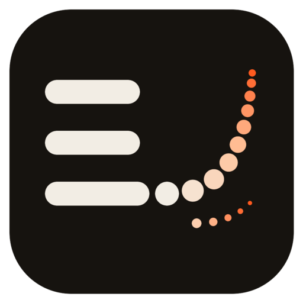
brief2motion is a skill for Claude Code and Codex. You describe a website in plain words, and the agent builds it with motion that suits it, then measures the result in a real browser before you see it.
This guide is for people who can describe what they want and would like to understand what they get back: founders, designers, marketers and developers. It explains how to write the brief, how the skill chooses its tools, what each tool is good at, the visual styles it knows, and what the checks mean. Every example in it is in the repository and runs on your machine.
| Kind of site | What moves | Built with | Example |
|---|---|---|---|
| Product launch | a 3D object you can turn; scroll poses; an exploded view; colourways | three.js | halden-one |
| Brand scroll story | pinned scenes, a picture sequence scrubbed by scroll, a sideways gallery | GSAP, ScrollTrigger, Lenis | tidewater |
| Type-led landing page | a headline that sets word by word, rows of words that slide, springs | Motion | relay |
| Portfolio | a thumbnail that grows into the next page; a grid that glides when filtered | View Transitions API | halvorsen |
| Data story | one chart that redraws as you read; counters | SVG, D3 scales | keeling |
| App interface | tabs, drag to reorder, items moving between lists, numbers on springs | React, Motion for React | mise |
| Illustrated page | a drawing that draws itself, icon animations, pots that fill on scroll | CSS, JavaScript, Lottie | sprout |
| Particles | dust that forms a product, a logo, a face or a word | the dust engine | copper-no-7 |
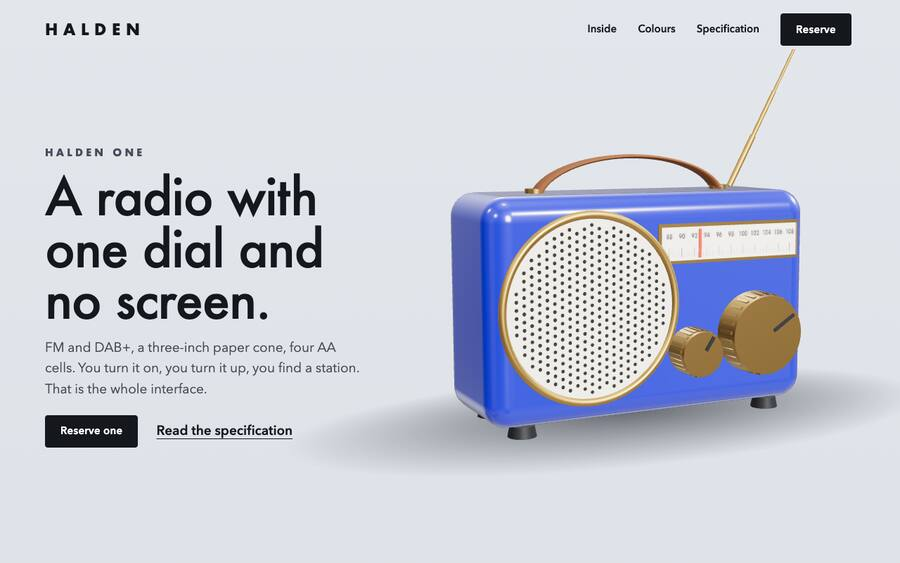
halden-one: a radio built from about forty shapes in three.js. No model file, no photograph.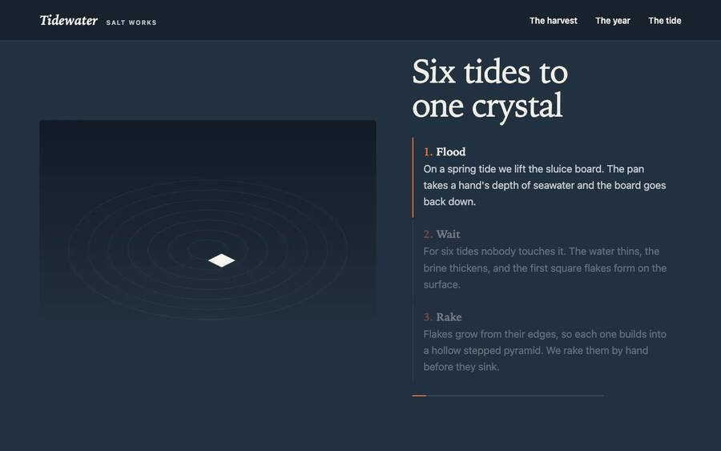
tidewater: the crystal is 48 pictures; your scroll position picks one.Whatever the brief asks for, the agent goes through the same six steps. The fourth is the one that matters: the page is measured, and a failed check is a fix, not a footnote.
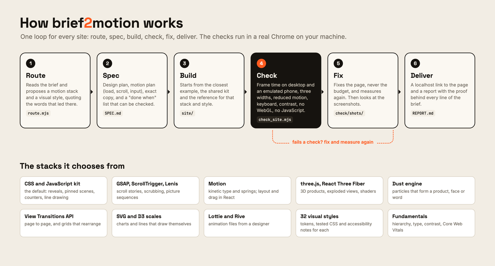
| Step | What happens | What you can read afterwards |
|---|---|---|
| 1. Route | route.mjs reads the brief and proposes a motion stack and a visual style, quoting the words that led there. The agent agrees or overrules. | the first lines of SPEC.md |
| 2. Spec | A design plan, a motion plan in three lists (on load, on scroll, on input), every word of copy, and a "done when" list. | SPEC.md |
| 3. Build | Starts from the closest example and the shared kit, with the reference for that stack and style open. | site/ |
| 4. Check | check_site.mjs opens the page in Chrome seven ways and measures it. | check/site-report.json, check/shots/ |
| 5. Fix | Fixes the page, never the budget, and measures again. Then looks at the screenshots. | the same files |
| 6. Deliver | Starts a local preview and writes the report. | REPORT.md and an http://localhost link |
Two ideas hold the loop together. The first is that a brief ends in things that can be checked, so "done" is a list of numbers and screenshots instead of an opinion. The second is that the page has to work for everyone who opens it: on a small phone, with a keyboard, with motion switched off, without WebGL, even with JavaScript off.
Two commands in Claude Code, then a new session.
/plugin marketplace add qualixar/brief2mp4
/plugin install brief2motion@brief2mp4If you do not use brief2mp4, add this repository as its own marketplace: /plugin marketplace add qualixar/brief2motion, then /plugin install brief2motion@brief2motion. In Codex: codex plugin marketplace add qualixar/brief2motion, then codex plugin add brief2motion@brief2motion. Or clone the repository and copy skills/brief2motion into ~/.claude/skills/ or ~/.codex/skills/.
| Tool | Needed for | Install on macOS |
|---|---|---|
| Node.js 22 or newer | everything | brew install node |
| Chrome or Chromium | the checks, which need a real browser with WebGL | brew install --cask google-chrome |
| playwright-core 1.65.1 | driving the browser | downloaded once by the first check, about 14 MB |
| Python 3 | the preview server (a Node version is included) | preinstalled |
| ffmpeg | a short film of the page (optional) | brew install ffmpeg |
Check a machine at any time with bash skills/brief2motion/scripts/doctor.sh. It prints ok or the exact install command for each tool, for macOS, Windows and Linux.
When the agent says it is done, it gives you a link such as http://localhost:8421/. Open that address. Do not double-click site/index.html: browsers refuse to load JavaScript modules from a file, so you would see a blank page. To start the preview yourself: python3 skills/brief2motion/scripts/serve.py site. It serves the folder on your own machine only, and Ctrl-C stops it. To publish, upload the site/ folder to any static host.
The agent guesses less when the brief says more. Seven lines cover almost everything.
| Line | What to write | Why it matters |
|---|---|---|
| What it is | the product, and who it is for | the router picks a visual style from the product and the audience |
| What moves | in your own words, in order: on load, as I scroll, when I click | this picks the motion stack |
| Words on the page | the headline and button text, exactly | the agent uses them as written and invents nothing |
| Images | what you have, or "none: draw it in code" | it will not borrow pictures it has no right to |
| Look | colours, type, a mood, or a style by name | your words replace any style the router would guess |
| Stack | only if you care: "plain HTML", "Next.js", "use GSAP" | a named library is always used |
| Done when | one checkable line per thing you care about | these are what the checks measure |
This is the brief that produced halden-one, as it is in the repository.
A product launch page for Halden One, a table radio with one dial and no screen. We have no photos and no 3D model yet, so build the radio in code.
What moves: a 3D turntable of the radio that I can drag to turn. As I scroll it goes through four steps: the whole radio, a close-up of the dial, an exploded view with the parts labelled, and a colour picker with four enamels.
Words on the page, exactly: headline "A radio with one dial and no screen." Buttons "Reserve one" and "Read the specification".
Look: a pale studio backdrop like product photography. The radio's enamel is the only colour. Retro geometric type.
Stack: plain HTML, no build step.
Done when: the exploded view shows at least four labelled parts, the colour buttons repaint the shell, there is a still picture when WebGL is off, reduced motion cuts between the four poses instead of travelling, and p95 frame time is 20 ms or less on desktop and 40 ms on the emulated phone.| The brief says | What happens | Say this instead |
|---|---|---|
| "Make it pop", "feel alive", "modern" | nothing to route on; the agent proposes one moment and builds that | what should move, and when |
| "Like Apple" or "like Stripe" | the agent has to guess which quality you mean | the quality: the glass, the scroll scenes, the restraint |
| "Add animations everywhere" | a fade on every section, which reads as generated | the one moment you want people to remember |
| "Use our customer logos and reviews" with none attached | it leaves the section out; it will not invent proof | attach them, or drop the section |
When the page is up, one follow-up is worth sending: "Check it against the brief." The agent goes back to your original words line by line, shows the evidence for each, fixes what falls short and measures again.
The router is a keyword scorer with a rule book you can read. It has never seen your product, so the agent treats its answer as a proposal.
$ node skills/brief2motion/scripts/route.mjs BRIEF.md
Stack: GSAP with ScrollTrigger and Lenis
why: The brief describes a sequence tied to scrolling: pinned sections, scrubbed timelines,
sideways galleries or a picture sequence. GSAP timelines with ScrollTrigger are the
dependable tool for that, with Lenis for smooth scroll.
the brief says: "as you scroll", "pinned", "scrubbed", "sideways", "sequence", "story"
read: references/stacks/gsap.md study: examples/tidewater/
Style: Editorial / magazine (inferred)
why: craft and food want warmth and a printed, tactile feel ("salt")
read: references/styles/editorial.mdEach stack has a list of phrases with weights. The stack with the highest total wins, and the default is the lightest one. A few rules keep it honest:
A style named in the brief is used. Otherwise the router looks at what the product is, who it is for and the mood words, and one stray word is never enough: "paper" in "paper plane" does not pick a paper-textured look. The first rows of the audience table:
| The brief mentions | Styles proposed, in order | The reason it gives |
|---|---|---|
| headphones, speaker, radio, earbuds, gadget, device, wearable, smartph ... | Minimalism, Dark-mode-first, Editorial / magazine | hardware sells on the object itself: a quiet page, one large product, little else |
| bankw*, financw*, fintech, insurw*, legal, law firm, accounting, inves ... | Swiss / International Typographic Style, Minimalism, Flat design | money and law need trust and fast scanning: a strict grid, high contrast and almost no decoration |
| healthw*, medical, clinic, hospital, pharmaw*, patient, therapy, care ... | Minimalism, Flat design, Material Design 3 | health audiences include people who are stressed or have low vision: calm, plain and high contrast |
| kids, children, toddlers, school, classroom, learning app, education, ... | Claymorphism, Memphis, Neubrutalism | a young audience responds to soft, toy-like shapes and bright colour |
| developer, devtool, dev tool, api, sdk, cli, open source, infrastructu ... | Dark-mode-first, Swiss / International Typographic Style, Neubrutalism | developers work in dark editors and want density and directness; a dark default is expected here |
| ai, machine learning, llm, model, agentproduct, platform, startup, too ... | Aurora / mesh gradient, Dark-mode-first, Minimalism | an abstract product with no photo to show: soft gradients carry the mood while plain type carries the claim |
| luxury, premium, jewelw+, watches, perfume, fragrance, hotel, spa, fin ... | Editorial / magazine, Art Deco, Minimalism | luxury reads through restraint, large serif type and a lot of space |
| music, festival, band, dj, club, record label, nightlife, concert ... | Maximalism, Synthwave / retrowave, Duotone | music brands sell energy: dense colour, big type and treated photography |
| game, gaming, esports, arcade, streamer ... | Cyberpunk / neon, Synthwave / retrowave, Glitch | gaming audiences expect a dark, lit, high-energy look |
| fashion, streetwear, apparel, sneakers, beauty, cosmetics ... | Editorial / magazine, Maximalism, Y2K | fashion follows magazine layout, or pushes against it on purpose |
| creator, indie, maker, newsletter, side project, community, zine ... | Neubrutalism, Memphis, Grain / noise texture | independent products win by having a voice: bold outlines and flat colour are quick to recognise |
| magazine, publication, journalisw+, newsroom, long-form, essay, report ... | Editorial / magazine, Swiss / International Typographic Style, Grain / noise texture | reading comes first: a type scale, a measure and a grid |
If nothing matches, it says so and suggests none. A brand's own colours and type always replace a style's tokens. The rule book is references/routing.json; adding a phrase is a one-line change, and the tests check that every example's own brief still routes to the stack that example was built with.
Some briefs ask for more than a page that moves. They ask for a site with several pages, or for one page that has to make a visitor do something. For those, brief2motion works through nine stages. Each writes one short file that you and the agent can both read, and each has a check.
Use site mode when the brief asks for a site with several pages, or for one page whose job is to get a visitor to sign up, buy, book or register. Stay with the six-step loop when the motion is the point of the page: a product to turn, a scroll story, a particle portrait.
Site mode puts design before motion. Stages 1 to 5 come before the loop's first step. Stage 6 holds the routing and the spec. Stages 8 and 9 are the loop's build and check.
| Stage | What it settles | File it writes | Checked by |
|---|---|---|---|
| 1. Discovery | who visits, what each of them wants to do, what the owner counts as success, the limits, and every open question with the assumption you took | DISCOVERY.md | check_plan |
| 2. Content | every word on every page; each claim has an ID and a source, or is marked DRAFTED | CONTENT.md | check_plan |
| 3. Routes | for each page: path, parent, template, title, description, main action, states, links | routes.json, SITEMAP.md | check_plan, check_meta |
| 4. Wireframes | grey boxes with the real copy, phone first, with the main action in reach | wireframes/<template>.html | check_layout |
| 5. Tokens | colours, type and spacing as named values, light and dark, with the text pairs to measure | tokens.json, then site/tokens.css | build_tokens |
| 6. Visual design | one idea taken from the subject; type, grid, colour, pictures; the one thing a visitor will remember. Then the router and SPEC.md, as in the loop | DESIGN.md, ASSETS.json | check_plan |
| 7. Motion | for each movement: its purpose, trigger, states, how it can be interrupted, its reduced-motion form and its pattern page | MOTION.md | check_site |
| 8. Build | semantic HTML first, motion on top | site/ | everything above |
| 9. Checks and a second reader | the tasks a visitor must finish, the checker records, and notes from someone who did not build it | journeys.json, check/qa.json, REVIEW.md | five checkers |
check_plan fails a drafted claim that looks like proof and sends a drafted figure to review.routes.json, and each one is loaded by the checkers.Stage 2 and stage 4 start from the kind of page. references/page-blueprints.md gives the usual order of sections for seven kinds, with one action for each. Keep only the sections the visitor's decision needs.
| Page type | Sections, in the order the visitor's questions arrive | The one action |
|---|---|---|
| Product launch | What it is and what changed (with the date or availability), then the product in use, then how it differs from what the visitor has now, then availability, eligibility and limits, then answers | Buy, watch the demo, or join the waiting list, whichever matches the product's real status |
| SaaS | Who it is for and the outcome, then the workflow with the real interface shown, then use cases, then proof near the claims it backs, then pricing or the evaluation path, then objections (security, switching, cancelling) | Start a trial or book a demo, as the brief says, and make the comparison route obvious for buyers who are still weighing it |
| Portfolio | Name and discipline, then selected work, each with role and scope, then case pages with the process and the outcome, then about, then contact | Open a case, then reach the right contact path |
| Agency | Who the studio works with and what it delivers, then relevant work, then the scope of services and the process, then the people or client evidence, then an enquiry | See related work, or send a brief |
| Event | What, when (with the time zone) and where, then featured people or the programme, then tickets and availability, then travel, access and refunds, then questions | Register or buy, or see the schedule |
| Documentation | Product and version, then search and sidebar, then quickstart, then tasks, reference and explanation kept apart, then next steps | Complete the quickstart from a clean environment, and say so when you did |
| E-commerce product page | Title and useful media, then price, variants, stock and the buy controls, then shipping and returns, then detailed specification, proof and comparisons | Add the chosen variant to the cart |
A small brief does not need nine long documents. For a one-page site, keep one short entry in each file. You may skip stage 4 when the page has no template choice, and stage 7 when it has no motion. A site with several page types writes one entry per route or template.
Never skip stages 1, 2, 3 and 9. Without them nothing says what the page is for, whether its words are true, where it sits, or whether it worked.
Five checkers write into one file, check/qa.json. Each record names the page, the state, the width, the browser, what was measured and the threshold. Beside them, build_tokens measures the colour pairs and check_site still runs the motion, fallback and weight checks.
| Check | It opens | What it catches |
|---|---|---|
check_plan | the plan files, no browser | a task with no page to do it on; a claim with no source; an invented review or logo; a picture with no rights record; a page nothing links to; a form with no declared states |
check_layout | every page and state in Chrome at 320, 390, 768 and 1440 px | sideways scroll; text cut off; text and buttons colliding; tap targets under 24 px; lines far too long; a focused control hidden under a sticky bar |
check_a11y | every page and state, light and dark | failed axe-core rules (names, roles, labels, landmarks, contrast); the Tab key not reaching the page's main action |
check_journeys | a phone and a desktop window, driven by journeys.json | a visitor who cannot finish the task: click this link, fill this field, expect this message; any console error on the way |
check_meta | the built pages, no browser | a missing or repeated title or description; a wrong canonical address; a share image that is missing or too small; a sitemap that disagrees with routes.json |
| Outcome | Meaning | What you do |
|---|---|---|
| PASS | measured, and within its threshold | nothing |
| FAIL | measured, and over the threshold; blocks the release | fix the page, run again |
| REVIEW | the tool cannot decide: text over a picture, a drafted figure, an ambiguous overlap | look at it yourself and decide |
| PENDING | no evidence exists yet: a site not built, a sign-up that ends at a fixture, axe-core not loaded offline | connect the missing piece and run again |
Exit code 0 means no FAIL. Add --strict and a REVIEW fails too.
A checker measures. It cannot see that a layout is dull or that the first screen says nothing. So the last part of site mode is a second reader: a different agent or a person who did not build the page and has not read the brief. They get what a visitor gets, the built site and its screenshots, and write notes in REVIEW.md.
They start with three questions, answered cold from the first screen at 390 px and again at 1440: what does this page offer, and to whom; what did your eye land on first; what would you do next. Then they read the brief. Wherever their answers differ from what the brief meant, that is a finding, even if every check passed.
Three short tests follow. Switch to reduced motion and mute the tab: is the page still complete? Use it one-handed on a phone: can a thumb reach the main action? Shrink the first screen to 480 px wide: can you still say what it offers? Two rounds of fixes are enough. A third means the brief is unclear, and the question goes back to the owner.
examples/larkspur/ is a 3-page launch site for a shared inbox, built through the nine stages, all but the second reader's notes. Larkspur is a made-up product, and the site says so near the top and in the footer. Its brief gives the facts it may state, two plans and a 14-day trial, and says there are no customers, logos, reviews or statistics. So the site has none. The brief's "done when" asks for a visitor on a phone to get from the home page to a finished trial form, including after one mistake.
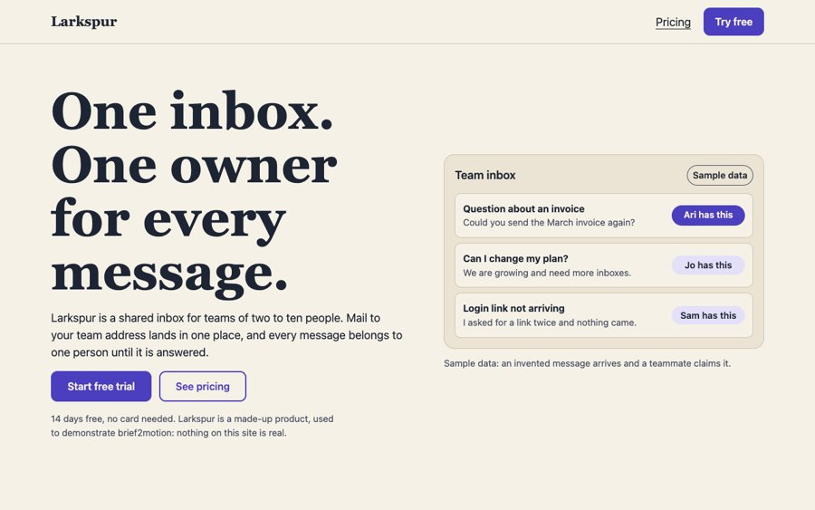
larkspur, home page. One idea (the inbox drawn in code, marked as sample data), one action, and no invented proof.The stage files are the content of the folder: 3 routes in routes.json, 11 sourced claims in CONTENT.md, 3 journeys in journeys.json, and one script that runs everything.
node $S/build_sitemap.mjs .
node $S/build_tokens.mjs tokens.json --qa check
node $S/check_plan.mjs .
node $S/check_layout.mjs . --wireframes
node $S/check_layout.mjs . --themes light,dark
node $S/check_a11y.mjs . --themes light,dark
node $S/check_journeys.mjs .
node $S/check_meta.mjs .
node $S/check_site.mjs site --pages pricing/index.html,start/index.html --out checkThe script is examples/larkspur/tools/run-checks.sh. It runs those commands in stage order, keeps qa.json and site-report.json beside the example, and exits 0 when nothing failed. Copy it into your own project and change the folder names. Add --no-perf on a machine with no graphics chip. Start it with:
bash examples/larkspur/tools/run-checks.shThe result, read from qa.json when this guide is built: 337 PASS, 0 FAIL, 0 REVIEW, 2 PENDING, out of 339 records, in Chrome 158.0.8127.36 with axe-core 4.14.1.
| Check | Records in qa.json |
|---|---|
build_tokens: colour pairs, light and dark | 21 |
check_plan | 12 |
check_layout: every page, state and wireframe at four widths | 240 |
check_a11y | 32 |
check_journeys | 14 |
check_meta | 20 |
| All together | 339 |
The two PENDING records are one journey, "start the trial", on a phone and on a desktop. The form is a fixture: it checks the entry and shows a thank-you, and sends and stores nothing. The click-through passed, but nothing proves that a real service would receive the sign-up, so the report does not say PASS. Connect the service, run again, and they change.
The motion checks on the same pages (check_site) passed 74 of 74. Each page is 28 to 32 KB, and nothing loads from another host. The slowest 95th-percentile frame is 16.8 ms, on desktop and on the emulated phone alike.
Most motion on a website needs no library. The kit is ten small files that handle the parts that are easy to get wrong.
| File | What it does |
|---|---|
kit.css | the accessibility floor: a skip link, a focus ring that shows on any background, the reduced-motion rule |
motion-core.js | the reduced-motion switch, the state signal, frame loops that stop when hidden, one shared scroll listener, scroll progress for pinned scenes, and the maths |
reveal.js | entrances with the Web Animations API; content stays visible if the script never runs |
split-text.js | a heading cut into words, characters or lines, still read as one sentence by a screen reader |
counter.js | a number that counts up while its real value stays in the page |
svg-draw.js | lines that draw themselves |
image-sequence.js | numbered pictures scrubbed on a canvas, loaded coarse to fine |
view-transitions.js | same-page transitions and the shared element between pages |
three-stage.js | a three.js renderer that fails softly, caps its pixel ratio, pauses off screen and holds one frame for reduced motion |
players.js | Lottie and Rive, loaded only when needed and paused when unseen |
Make the section tall and its child sticky. The kit turns scrolling into a number from 0 to 1 and writes it to a CSS variable.
<section class="scene" style="height: 400vh">
<div style="position: sticky; top: 0; height: 100svh"> ... </div>
</section>
import { scrollScene, slice } from './kit/motion-core.js';
scrollScene(document.querySelector('.scene'), (p) => {
caption.style.opacity = Math.min(slice(p, 0.3, 0.4), 1 - slice(p, 0.6, 0.7));
});CSS can tie an animation to scroll position. sprout fills its pots this way. Browsers without the feature, and visitors with reduced motion, see the finished state.
.water::after { transform: scaleY(var(--fill)); transform-origin: bottom; } /* the default is the end state */
@media (prefers-reduced-motion: no-preference) {
@supports (animation-timeline: view()) {
.water::after { animation: fill linear both; animation-timeline: view();
animation-range: entry 20% cover 45%; }
@keyframes fill { from { transform: scaleY(0); } }
}
}For choreography: several things moving in a set order, scenes pinned and scrubbed by scroll, sideways galleries, text that splits and sets.
All of GSAP is free since 2025, the former paid plugins included. It is free under GSAP's own licence, not an open-source one: it allows commercial work and code an AI wrote, and forbids use inside no-code animation builders that compete with Webflow. Pages load it from a CDN at a pinned version with integrity hashes.
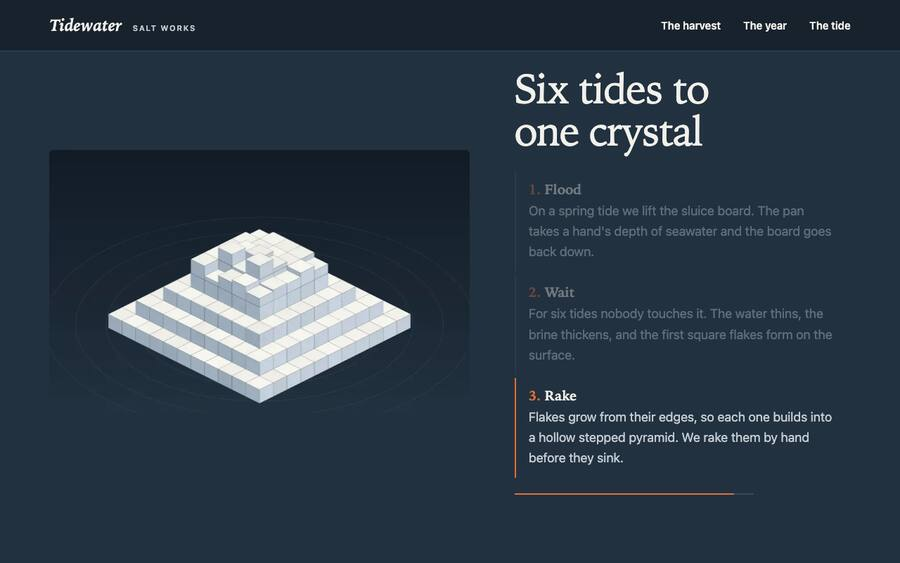
tidewater: the section is pinned; the caption and the picture follow the scroll.gsap.matchMedia() owns every branch. Motion is created only inside it, and GSAP undoes all of it when a condition stops matching.
const mm = gsap.matchMedia();
mm.add({ motion: '(prefers-reduced-motion: no-preference)', wide: '(min-width: 861px)' }, (ctx) => {
const { motion, wide } = ctx.conditions;
if (!motion) { showFinishedState(); signal('reduced'); return; }
const lenis = new Lenis({ anchors: true }); // smooth scroll on the same clock
lenis.on('scroll', ScrollTrigger.update);
gsap.ticker.add((t) => lenis.raf(t * 1000)); gsap.ticker.lagSmoothing(0);
ScrollTrigger.create({ trigger: '.seq-pin', start: 'top top', end: '+=260%', pin: true, scrub: true,
onUpdate: (st) => sequence.draw(st.progress) }); // the picture follows the scroll
signal('ready');
});scrub: true for things that must stay locked to the scroll; scrub: 0.5 for things that should glide.anchors: true, or they stop working.Motion is the library that used to be Framer Motion. Use it for how an interface feels: springs, gestures, layout changes, things entering and leaving.
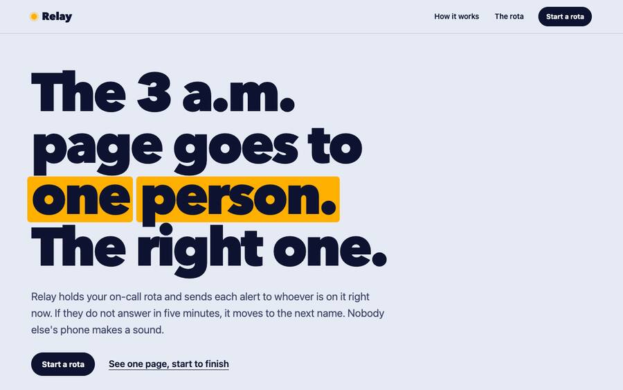
relay: the headline sets word by word; an amber block wipes in behind two words.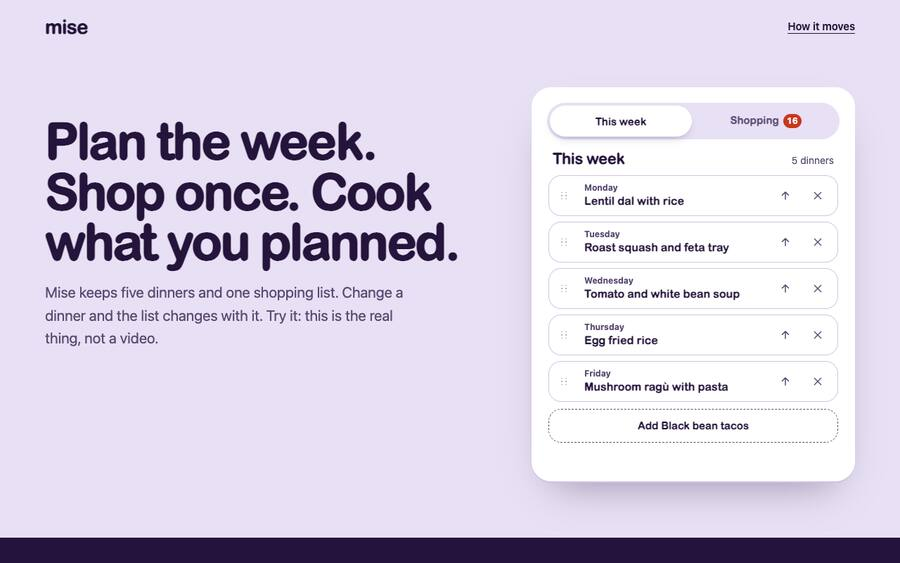
mise: a React planner. Rows make room when you drag; ticking moves an item between lists.import { animate, stagger, scroll, spring } from 'motion';
const { words } = splitText(title, { by: 'words' });
animate(words, { opacity: [0, 1], y: ['0.55em', '0em'] }, { duration: 0.9, delay: stagger(0.055) });
scroll(animate(bar, { scaleX: [0, 1] }, { ease: 'linear' })); // page progress
let y = 0; // a spring you can interrupt
const moveTo = (to) => animate(y, to, { type: spring, stiffness: 420, damping: 30,
onUpdate: (v) => { y = v; el.style.setProperty('--y', v + 'px'); } });<MotionConfig reducedMotion="user">
{tab === id && <motion.span layoutId="tab-marker" transition={spring} />} {/* one marker, shared */}
<Reorder.Group axis="y" values={ids} onReorder={setIds}>
<AnimatePresence initial={false}>
{items.map((item) => <Reorder.Item key={item.id} value={item.id} layout
initial={{ opacity: 0, scale: 0.92 }} animate={{ opacity: 1, scale: 1 }} exit={{ opacity: 0, scale: 0.9 }} />)}
</AnimatePresence>
</Reorder.Group>
</MotionConfig>Three things learned while building mise, each now in the reference:
For a real 3D object or scene: a product to turn, parts that come apart, a camera that travels, a shader.
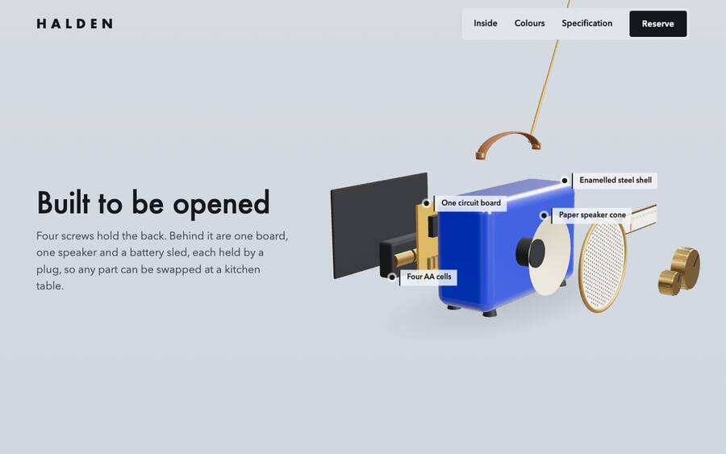
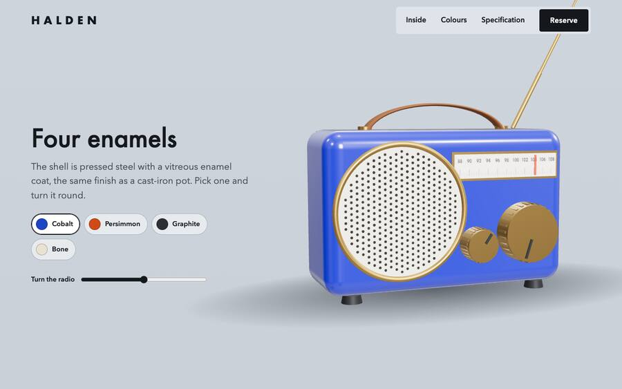
A generated room, blurred into an environment map, gives enamel and brass something to reflect with nothing to download. A plane with a soft dark gradient under the object reads as a contact shadow and costs almost nothing. The radio itself is about forty primitives. For a real model the reference covers glTF, compression and credits.
Describe each pose as plain numbers (camera angle, distance, how far the parts are pulled apart), give each a scroll position, and interpolate, holding each pose for a while before travelling. With reduced motion the scene cuts from pose to pose.
const POSES = [{ yaw: -0.48, dist: 10.6, explode: 0 }, { yaw: 0.36, dist: 6.2, explode: 0 },
{ yaw: -0.98, dist: 17.5, explode: 1 }];
if (snap) t = t < 0.5 ? 0 : 1; // reduced motion: cut, do not travel
const e = ease.inOutCubic(clamp((t - 0.18) / 0.64)); // hold, travel, holdThe one stack with a complete template: you change a settings file and the engine does the rest.
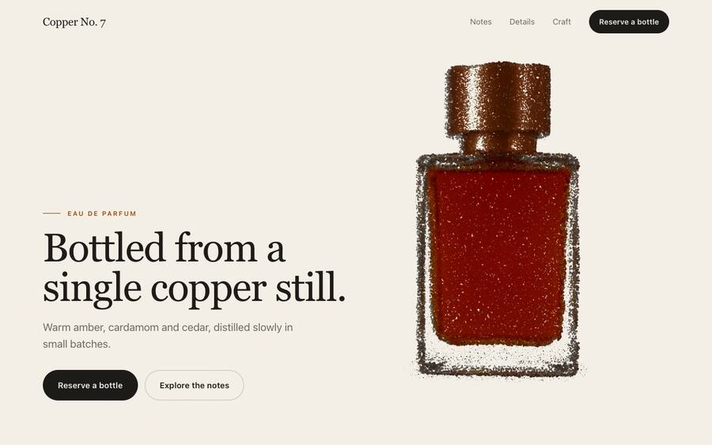
copper-no-7: 60,000 dots form the bottle as the page loads.Each dot has a place in a slow galaxy of dust and a place in each shape. Two numbers drive everything: how far the dust has formed, and which shape it is forming. The graphics chip moves every dot, so sixty thousand cost about the same as six hundred.
Stipple places dots by darkness and suits products and logos. Halftone puts round dots on a grid, sized by darkness, and suits faces. A portrait needs a calm, front-facing photo on a plain background.
| The brief says | Setting |
|---|---|
| "made of dust", "particles form my product" | assemble.targets, stipple |
| "portrait", "my face", "halftone" | style: 'halftone', mask: 'oval' |
| "turns into", "then back to the product" | up to four shapes and a sequence |
| "a plane flies across" | flight.path |
| "when I scroll" | scroll.length |
The engine never passes a budget by quietly drawing fewer dots: its own checker fails a page that sheds any on desktop.
The browser takes a picture of the old page and morphs it into the new one. You write CSS and almost no script, and a browser without the feature changes the page the ordinary way.
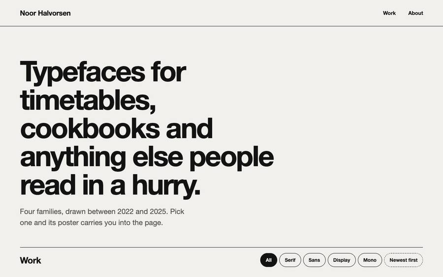
halvorsen: four posters on the index.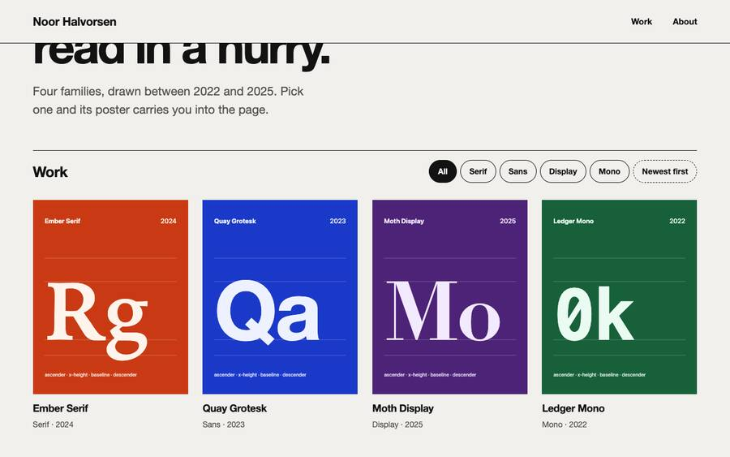
@media (prefers-reduced-motion: no-preference) {
@view-transition { navigation: auto; } /* both pages opt in */
::view-transition-group(hero-media) { animation-duration: 520ms; }
}
.project-poster { view-transition-name: hero-media; } /* the big picture on the project page */On the index only the clicked card may carry that name, so a few lines of script set it as the old page leaves and again when you come Back. That script has to run before the page's first frame:
<script type="module" blocking="render" src="site.js"></script>Without blocking="render" the first navigation after a fresh load showed no morph in testing. The smoke test now checks that both halves of the morph exist, in both directions.
document.startViewTransition and give each item its own name.Three ways to move illustration. SVG in code is the lightest. Lottie plays an animation exported from After Effects. Rive plays an interactive animation with states.
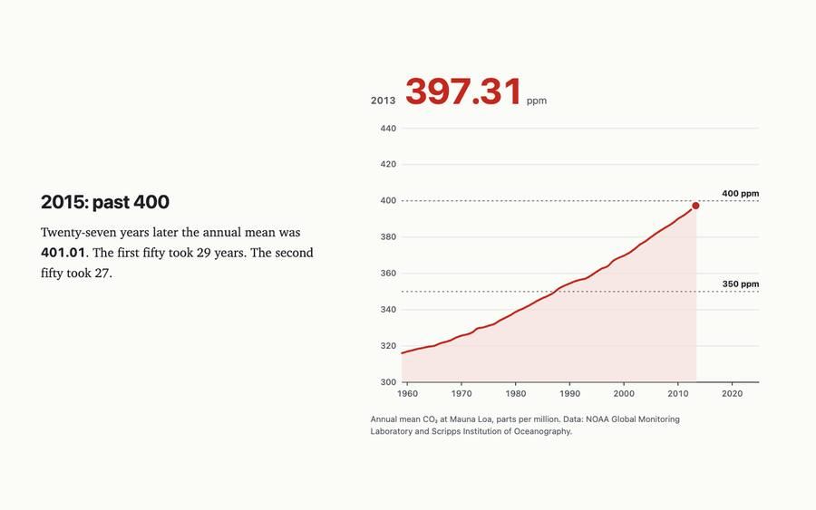
keeling: the line is revealed by widening a clip, so it always ends exactly on the right year.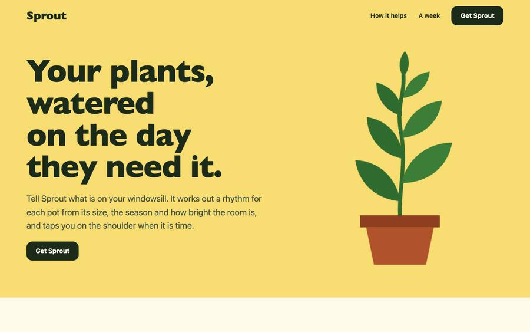
sprout: the stem draws, then seven leaves grow from the points where they meet it.Measure the real length with getTotalLength(), set the dash to it and move the dash offset from that length to 0. Do not use pathLength="1" and do not combine a drawn line with vector-effect: non-scaling-stroke.
Write the SVG yourself and use D3 only for the maths: scales, and the path of a line. A chart needs a text alternative: a label that states the finding, a caption with the source, and the numbers in a table. Every number in keeling comes from one public file, and the page links to it.
The kit loads a player from the CDN only when the first animation is near the screen, plays it only while visible, and shows one chosen still frame with reduced motion. Reserve the box with aspect-ratio, so nothing jumps when the animation arrives.
| The brief has | Use |
|---|---|
| lines, simple shapes, icons, a chart | SVG with the kit |
| a finished animation exported from After Effects | Lottie |
| a character or control that reacts to input, with several states | Rive |
| a looping illustration heavier than about 200 KB as Lottie | a short muted video with a poster |
Two techniques that cut across the stacks.
A headline is cut into lines, words or characters, and each piece gets its own timing. The sentence has to stay one sentence for a screen reader, which the kit and GSAP's SplitText both handle.
| Piece | Gap between pieces | Whole headline |
|---|---|---|
| Lines | 80 to 120 ms | set within about 1.2 seconds |
| Words | 30 to 60 ms | |
| Characters | 15 to 30 ms |
| Way | How | Use it for |
|---|---|---|
| Step-triggered | the section nearest a line on screen is active; switching runs a short transition | charts and diagrams with distinct states; the most robust |
| Scrubbed, CSS sticky | a tall section, a sticky child, a number from 0 to 1 | one scene with no library |
| Scrubbed, GSAP | pin and scrub with a timeline | several scenes, sideways travel |
| Native CSS | animation-timeline | enhancements that may be absent |
Scrolling scrolls: do not hijack it, do not make one wheel tick equal one section, do not block the keyboard. One change per step, with the text beside the graphic. Parallax adds little by itself and makes some people nauseous; a 2013 Purdue study found it did not improve the experience.
Almost no motion on a website needs it. It cannot speed up moving page elements or drawing, which the browser and the graphics chip already do. It can help with heavy arithmetic every frame: physics with thousands of bodies, fluid or cloth, processing pictures or video. Prove the JavaScript version is too slow first.
A pattern is a recipe for one motion you can name: a headline that rises line by line, a number that counts up, a card that grows into its page. There are 27, one page each in references/patterns/.
Every page has the same parts. Use when and Not when say whether the pattern fits. Stack names the tool. Brief words are the phrases that point to it. Sketch is a short piece of code written against the kit. Budget is the cost, Reduced motion is what a visitor with that setting sees, and Checks says what check_site.mjs measures and what you must look at by eye.
A sketch is something to copy and change, not a finished page. The tests check that each sketch's JavaScript parses and that every file it imports from the kit exists. The examples are the tested pages.
signal('ready'), signal('reduced') or signal('static').route.mjs suggests themEach pattern has phrases with weights in references/routing.json. The router adds up the weights of the phrases it finds in your brief. A pattern with a total of 4 or more is suggested. At most four are shown, best first, each with the words that led there. Their pages are added to the list the agent reads before building.
Take this brief text:
The hero should animate in on load, headline first. Three headline figures count up as they scroll into view. A marquee of brand names. Clicking a product card grows it into its page.The router prints:
Pattern: Hero load sequence (vanilla), because the first screen should set itself in an ordered sequence on load (the brief says "hero should animate", "animate in on load")
Pattern: Number counter (vanilla), because a figure should count up to its real value when it scrolls into view (the brief says "count up")
Pattern: Marquee (vanilla), because a row of words or logos should drift sideways in a loop (the brief says "marquee")
Pattern: Shared element morph (view-transitions), because a card should grow into its detail page (the brief says "card grows it into its page")A phrase it does not know, such as "drifts sideways", scores nothing, which is why the brief above says "marquee". The "Brief words" line on each page lists what it listens for. To add a pattern, write its page with the same parts, list it in the index and in patterns in routing.json with its phrases, and run node --test tests/*.test.mjs.
Generated from the pattern pages and routing.json when this guide is built. The last column is what a visitor with reduced motion sees.
| Pattern | Stack | Use it when | With reduced motion |
|---|---|---|---|
hero-load-sequence | vanilla | The brief says the hero should "animate in", "set itself", "feel alive on load", or a launch page needs a first impression | No movement. The finished hero is on screen, and signal('reduced') says so |
text-line-reveal | gsap | A type-led page, a headline that carries the brief, a section title that should feel crafted | gsap.matchMedia() creates the motion only inside the no-preference branch |
word-by-word-read | vanilla | A manifesto, a mission paragraph or a single key statement that should be read slowly, once | --w is never set, so every word is at full opacity |
mask-reveal | vanilla | Hero or gallery images, project covers, a section that needs a deliberate "uncover" beat | No animation is created; the full image is on screen |
number-counter | vanilla | One to four headline figures (customers served, hours saved, a measured result) that the brief supplies | countUp returns at once: the final number is the only number |
marquee | vanilla | A strip of partner names the brief supplies, a ribbon of keywords, a kinetic divider between sections | The animation is only declared inside no-preference |
step-scrollytelling | vanilla | Explaining a process, a chart with several states, a data story, a before-and-after | States still change on scroll, in cuts (no transition) |
pinned-scene-scrub | vanilla | One idea needs 200 to 300% of a screen to unfold; a 3D object changing pose; a diagram assembling | Nothing pins and nothing scrubs: the scene is a normal block in its finished state |
horizontal-scroll | gsap | A timeline, a gallery or a set of case studies that suits a left-to-right order, on a wide screen | A native swipe row with scroll snap: the same content, no pin, no hijack, keyboard scrollable (tabindex="0" on the track if it has no focusable children) |
image-sequence-scrub | vanilla | The brief has a rendered or filmed object whose motion the reader should control | The canvas shows the last frame and nothing scrubs |
parallax-depth | vanilla | One hero or one divider, lightly, where the brief asks for "depth" or "layers" | No drift at all: the layers sit at their rest position (the CSS is only declared inside no-preference, the script returns) |
scroll-progress-bar | vanilla | A long read, an article, a scroll story where "how far" helps | Kept, because it is information: the bar grows with the reader's own scroll, with no animation |
product-3d-scroll | three | Hardware, a physical product, an object whose shape is the selling point, with a model (.glb) from the user | One still frame; scroll changes the pose in cuts (each invalidate renders once), never a glide |
shader-background | three | A hero or a section that wants atmosphere the brief names: "flowing", "aurora", "liquid", "gradient mesh" | One frame at a fixed time (stage.still), no loop |
magnetic-button | vanilla | One primary call to action on a pointer device, where the brief wants a tactile, playful feel | Not created. The button is a plain button |
cursor-follower | vanilla | An expressive portfolio or an agency page, on desktop, where the brief asks for a custom cursor | Not created: no dot is added, and the normal cursor is used with no lag and no growth |
tilt-spotlight-cards | vanilla | A row of feature or project cards on a pointer device, where the brief asks for "interactive", "premium" or "glow" cards | No listener is attached: flat cards, no light |
bento-motion | vanilla | A features overview with five to nine items of unequal weight, a product summary, a dashboard-style section | reveal returns at once: all tiles visible |
page-transition | View Transitions | A multi-page site (portfolio, studio, documentation with a few pages) where the brief wants it to feel continuous | The block is inside no-preference, so there is no transition and the page changes at once |
shared-element-morph | View Transitions | A portfolio, case-study index, product grid or gallery with a detail page for each item | Declared only inside no-preference: no morph, a plain page change |
layout-reorder | View Transitions | A filterable portfolio, a sortable list, a gallery with tags, a dashboard whose cards reorder | transition() runs the update directly: same result, no travel |
theme-toggle-transition | View Transitions | The brief asks for a dark or light switch, and the page supports both | set(next) runs directly: an instant switch |
section-colour-shift | vanilla | A story or a launch page with distinct chapters that each deserve a mood | The transition is declared only inside no-preference, so the colours switch at once: this is a cut, which is allowed |
scroll-snap-carousel | vanilla | Testimonials the user supplies, products, case studies, steps: anything with three to ten similar items in a row | scroll-behavior: smooth is declared only in no-preference, and the buttons use behavior: 'auto': jumps, not glides |
svg-line-draw | svg | A signature underline, a route or timeline, a hand-drawn diagram, a chart line | prepareDraw leaves the offset at 0: the whole line is there |
lottie-rive-spot | players | The user supplies a Lottie JSON or a .riv file, or the brief names After Effects, Lottie or Rive | Lottie loads paused on stillFrame; Rive draws one frame |
particles-form | particles | The brief wants particles, dust, dots, halftone or stipple that become something | The finished state is shown still (the engine keeps a still image of the formed shape for this and for no WebGL); the page scrolls normally and nothing travels |
Motion sits on top of a page. If the page under it is hard to read, badly spaced or slow, no animation rescues it.
The first screen states what the product is and what to do next, with real content. People spend 57% of their viewing time above the fold and 74% in the first two screens (Nielsen Norman Group, 2018), so the first screen must not be a slow reveal of nothing.
clamp() and a rem floor.transform and opacity, so nothing jumps.| Rule | Number |
|---|---|
| Direct feedback | about 100 ms |
| Most interface changes | 200 to 300 ms |
| Large movements | up to 400 ms; 500 ms and more drags |
| Entering against leaving | entering slightly longer, for example 300 ms in and 200 ms out |
| Stagger between related items | 30 to 80 ms, in reading order |
| A hero sequence | over in about 1.5 seconds |
Every animation has a reason: it shows what changed, where something came from, or what to look at. One orchestrated moment beats many scattered ones. A fade on every section and a hover effect on every card is the commonest sign of a generated page. Motion that answers input is always welcome.
Web motion sits on a design, so the skill knows the major visual styles. Each was checked against a published source, and each has tokens, tested CSS, the motion that fits, its accessibility traps and when to choose it.
The 28 looks are live on one page in the repository, examples/style-atlas/: the same small product fragment in every style, so they can be compared and measured. The pictures on the next pages are screenshots of it. The atlas, the reference pages and the router are generated from one data file, so they cannot drift apart.
| Family | Styles |
|---|---|
| Surface styles | Neubrutalism, Web brutalism, Glassmorphism, Liquid Glass-inspired, Neumorphism (soft UI), Claymorphism, Skeuomorphism, Flat design, Material Design 3 |
| Layout and type styles | Swiss / International Typographic Style, Minimalism, Maximalism, Bento grid, Editorial / magazine |
| Retro and themed styles | Y2K, Frutiger Aero, Vaporwave, Synthwave / retrowave, Memphis, Corporate Memphis, Art Deco, Cyberpunk / neon, Glitch |
| Visual treatments | Aurora / mesh gradient, Grain / noise texture, Duotone, Dark-mode-first, Isometric |
| Motion-led approaches | Kinetic typography, Scroll-driven storytelling, 3D / immersive WebGL, Micro-interactions |
Spectromorphism. Not a design style. No design source uses it; the nearest real word, spectromorphology, is a term from electroacoustic music. If a brief asks for it, ask whether neumorphism, skeuomorphism or glassmorphism was meant.
Thick black outlines, hard offset shadows with no blur, and two or three loud flat colours. Raw like brutalism, but tidy and friendly.
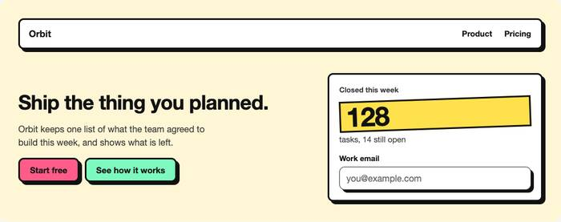
Creator tools, indie products, developer tools, events, consumer brands that want a voice.
Banking, healthcare, dense enterprise screens.
Fast and physical: a button moves by its shadow offset on hover and lands on press (100 to 200 ms). Marquee strips and stickers tilted a degree or two suit it. No soft fades.
An evolution of web brutalism that mixes its rawness with 1990s graphic design; described by Nielsen Norman Group in 2025.
The unstyled look on purpose: default fonts, visible structure, blue links, no decoration. A statement against polish.
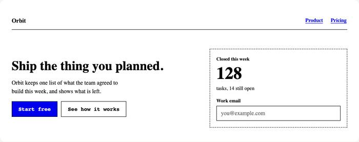
Art, architecture and design studios, manifestos, personal sites.
Anything that has to sell or convert.
None, or an instant state change. Motion would contradict the point.
A mid-2010s reaction to the light, optimistic mainstream web, collected at brutalistwebsites.com.
Frosted panels: a see-through fill, a blur of whatever is behind, a thin light edge and a soft shadow, floating over a colourful background.
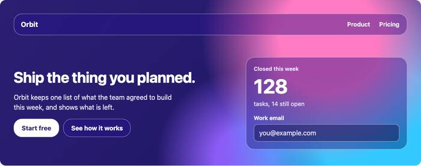
Navigation bars, overlays and cards over pictures or gradients.
Long reading text, data tables, low-end devices.
Slow drift of the shapes behind the glass, and a small lift on hover. Keep the blur radius fixed: animating blur is expensive.
Named and popularised around 2020 to 2021; assessed by Nielsen Norman Group in 2024.
Glass that behaves like a lens: controls float in a thin clear layer above the content, pick up its colour, and have a bright rim. On the web this is an imitation, not an Apple API.
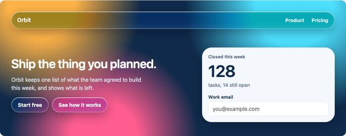
Media and photo products, Apple-platform companions, floating toolbars.
Text-heavy pages, anything where the glass would sit on the content itself.
Springy scale on press, and controls that merge or split. Keep it to the control layer.
Apple introduced Liquid Glass in June 2025 for iOS 26 and macOS Tahoe 26. Its guidelines keep it for controls and navigation, never the content layer.
Shapes pushed out of, or pressed into, a surface of the same colour, drawn only with one light shadow and one dark shadow.
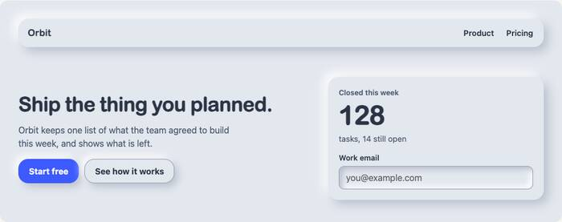
A few decorative controls: a music player, a smart-home dial.
Forms, data-heavy apps, anything that must be scanned quickly.
A press swaps the raised shadow for an inset one in about 150 to 250 ms.
The name was coined in 2019 ("neo" plus "skeuomorphism") after a Dribbble banking concept by Alexander Plyuto; it faded by 2021 over accessibility.
Inflated, toy-like shapes: very round corners, two inner shadows that model the form, and one big soft coloured shadow underneath.
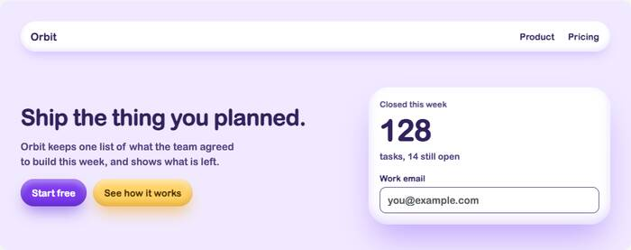
Children and education products, playful consumer apps, onboarding screens.
Finance, legal, anything that should feel sober.
Squash and stretch on a spring: a button flattens slightly on hover and bounces on press.
Named by designer Michal Malewicz in 2021 as a friendlier successor to neumorphism.
Controls drawn like the physical things they stand for: metal knobs, leather, paper, switches with real lighting.
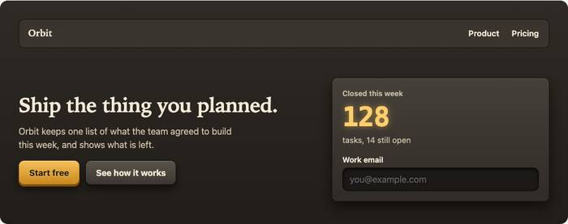
Audio tools and instruments, games, products where a physical metaphor teaches the use.
Content sites, large design systems that must scale.
Mechanical: a key travels 2 to 3 px and returns, a switch slides, a dial turns. Short and with no bounce unless the object has one.
Common in interfaces since the 1980s; Apple moved away from it with iOS 7 in 2013.
No depth at all: solid fills, clear type, simple icons, strong colour. Nothing pretends to be an object.
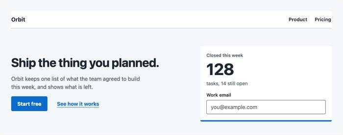
Marketing sites, dashboards, documentation, anything that must load fast.
Products that rely on a physical metaphor.
Colour and opacity changes of 100 to 200 ms. Movement is rare and short.
Rooted in Swiss style; reached interfaces with Zune (2006), Windows Phone 7 (2010) and iOS 7 (2013).
Google's system: tonal colour roles from one seed colour, surfaces at a few elevation levels, generous rounding and a defined motion scale.
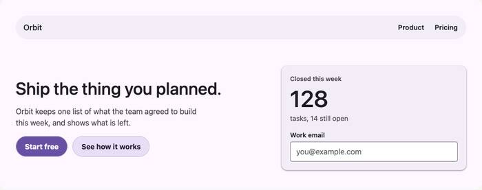
Android and Google-ecosystem products, utility apps, teams that want a ready system.
Brands that must not look like an Android app.
Use the scale: 100 to 200 ms for small changes, 300 to 500 ms for larger ones, with the standard easing. Expressive adds springs.
Announced in 2014; Material You (Material 3) in 2021; Material 3 Expressive in 2025.
A strict grid, one grotesque typeface, flush-left text and lots of white space. The layout is the decoration.
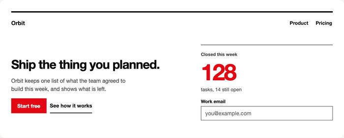
Editorial sites, portfolios, B2B, culture, anything led by text.
Brands that want warmth or playfulness.
Sparse and exact: text wipes along the grid, a rule that draws, one clean page-load sequence.
Switzerland, 1950s and 60s: Josef Müller-Brockmann, Armin Hofmann, Emil Ruder. Helvetica dates from 1957.
As few elements as the job allows: one idea per screen, wide margins, one accent, and nothing ornamental.
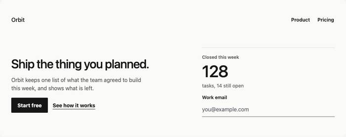
Premium products, portfolios, focused tools, any brief that says calm.
Products that must show a lot at once.
Almost none: opacity and position changes of 150 to 300 ms that explain a change of state.
From the 1960s art movement; "less is more" (Mies van der Rohe) and "less but better" (Dieter Rams).
More is more: clashing colour, layered pattern, several typefaces, everything large and overlapping, held together by repetition.
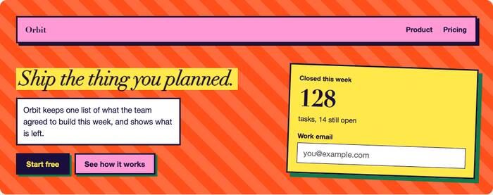
Fashion, music, festivals, youth brands, campaigns.
Tools, checkouts, anything people use while stressed.
Busy but ordered: things tilt, bounce and trade places; marquees run. Pick one thing to move most.
A long-standing reaction to minimalism across art, music and interiors; on the web it shows up as dense, collaged pages.
A grid of rounded tiles of different sizes, like a lunch box. Each tile holds one feature, and bigger tiles matter more.
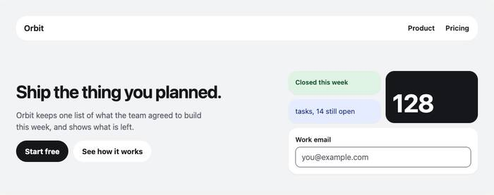
Feature overviews, product pages, dashboards, portfolios.
Arguments that have to be read in order.
Tiles scale a little on hover or play one small loop each. Stagger their entrance once, at most.
Named after the Japanese lunch box; popular since Apple product pages around 2023, with Windows Metro tiles as an earlier relative.
A printed page on screen: a serif headline, a standfirst, columns, pull quotes, captions and rules. Typography carries the page.
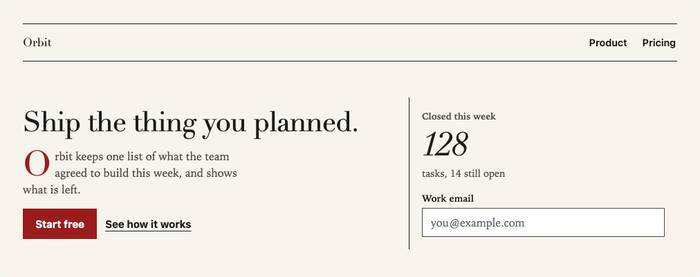
Publications, long-form stories, luxury and culture brands, case studies.
Dense apps and tools.
Quiet: a headline that sets line by line, images that reveal with a mask, captions that fade. Scroll-driven chapters suit long pieces.
Carried over from print magazines and newspapers; on the web it sits close to Swiss style.
The late-1990s vision of the future: chrome, bubbly rounded type, translucent plastic, lime and hot pink, shiny gradients.
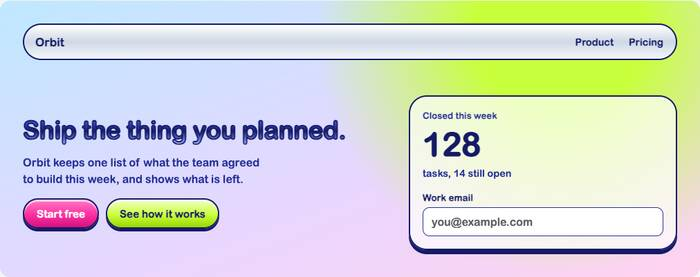
Fashion, music, youth brands, nostalgia campaigns.
Serious or long-lived product interfaces.
Bouncy and toy-like: buttons click down, stars spin, things wobble on hover.
The look of roughly 1997 to 2004, revived in the 2020s.
Glossy optimism from the Windows Vista era: sky blues and grass greens, water drops, bokeh, glassy rounded buttons.
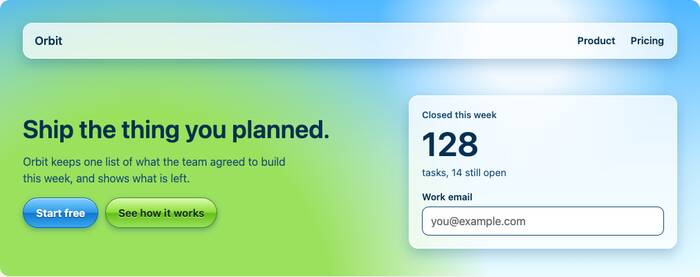
Nostalgia projects, climate and wellness brands that want an optimistic tone.
Anything that must look current and neutral.
Smooth and glossy: gentle glows, bubbles rising, soft fades of 200 to 400 ms.
Roughly 2004 to 2013. Named in 2018 after the Frutiger typeface and Windows Aero.
An ironic remix of 1990s computing and mall culture: pastel pink and cyan, marble busts, old window chrome, wide-spaced text.
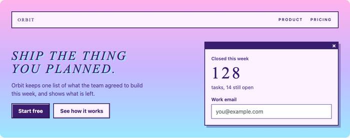
Music, art and culture projects, merch, ironic campaigns.
Mainstream commerce and tools.
Slow and dreamy: drifting gradients, a hue shift on hover, a scan line that passes now and then.
Grew out of an internet music scene in 2011 and 2012.
A neon 1980s: a magenta sun, a perspective grid running to the horizon, chrome type, purple night sky.
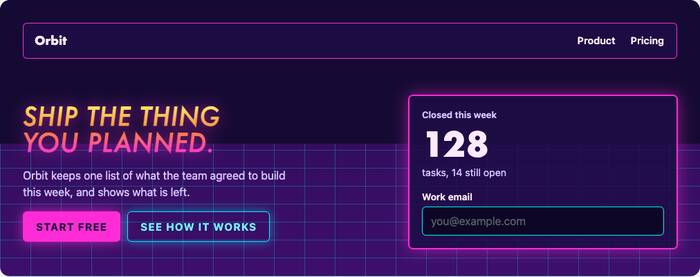
Games, music, events, retro-tech products.
Calm or corporate brands.
The grid scrolls towards the viewer, glows pulse slowly, titles slide in with a streak.
A music and visual genre from the mid-2000s built on 1980s film and game imagery; also called retrowave or outrun.
Squiggles, triangles, dots and terrazzo in clashing primaries and pastels, scattered at angles. Loud, geometric and cheerful.
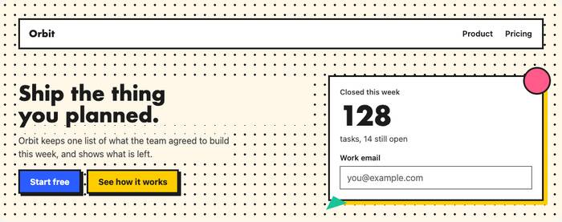
Events, education, playful consumer brands, posters.
Sober or premium products.
Shapes drift, rotate and bounce at different speeds; hover gives a quick tilt.
The Memphis Group, an Italian design collective led by Ettore Sottsass, 1980 to 1987.
The flat tech-company illustration style: friendly figures with long limbs and small heads in bright, flat colours.
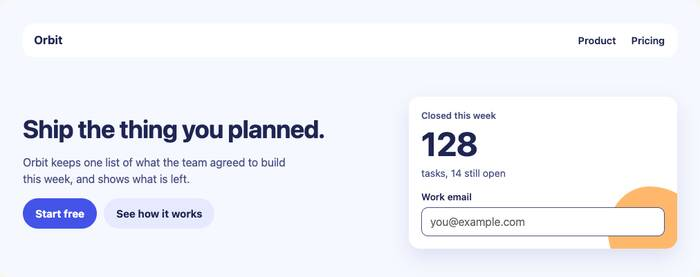
Internal tools, onboarding, explainers where friendliness matters more than distinction.
Brands that need to stand apart.
Gentle floating of illustrations, soft slide-ups of 300 to 400 ms.
Named by Mike Merrill; the best-known version, Alegria, was made for Facebook by the agency Buck in 2017.
Symmetry, stepped forms, sunbursts and fine gold lines on black or navy, with tall elegant capitals.
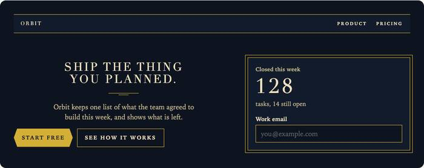
Hotels, bars, jewellery, events, heritage brands.
Casual, technical or youthful products.
Stately: lines that draw outward from the centre, fans that open, slow fades of 400 to 600 ms.
France, 1910s; named after the 1925 Paris exhibition of decorative arts.
A dark city at night: black panels, acid yellow and cyan neon, clipped corners, warning labels and terminal type.
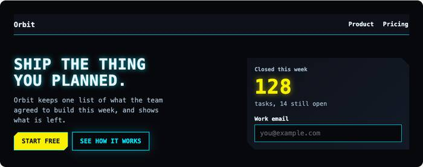
Games, security and developer tools, music, hardware.
General audiences reading at length.
Sharp and electric: flicker on entry (once), scan lines, quick clipped wipes of 100 to 200 ms.
From 1980s science fiction; Blade Runner (1982) set the visual template.
Deliberate digital damage: colour channels that split apart, slices that jump sideways, torn scan lines.
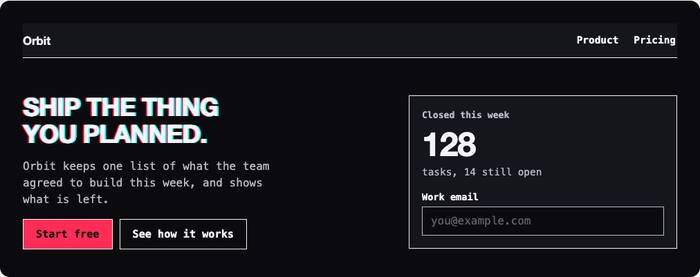
Music, games, art, error pages, launch teasers.
Reading-heavy pages, anxious contexts such as payments.
Short bursts of 200 to 400 ms with stepped easing, then stillness. Triggered by hover, entry or an error state.
From glitch art and 1990s net.art, where broken data became the image.
Large, soft, blurred fields of colour that blend into each other like northern lights, usually behind plain text.
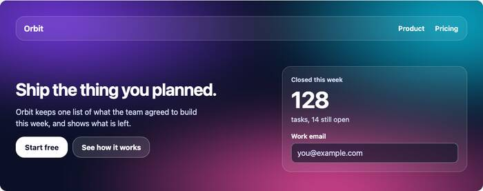
AI and developer products, landing page heroes, anything abstract with no photo to show.
Pages where a product picture would say more.
Very slow drift: 15 to 30 seconds per cycle, transform only. It should be barely noticeable.
A descriptive label from the 2020s, not a movement. CSS has no true mesh gradient, so it is built from blurred blobs.
A fine speckle over flat colour or gradients, like film grain or cheap print. It removes the plastic look and hides banding.
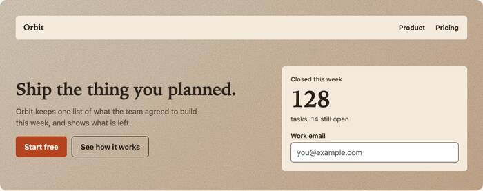
Craft, food, fashion, editorial, any brand that wants a printed or analogue feel.
Crisp, clinical product interfaces.
The grain itself stays still. If it must flicker, step it at a few frames a second on a small layer.
A print and film artefact, reproduced on the web with an SVG noise filter.
Every picture mapped to just two colours, a dark and a light, so mixed photography looks like one set.
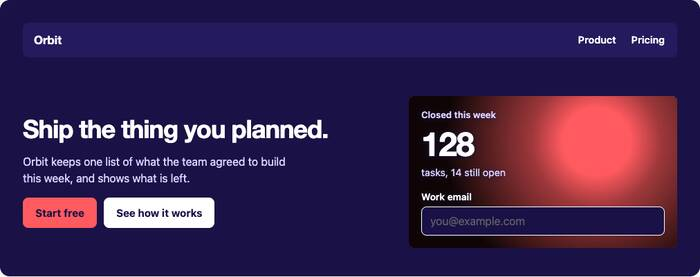
Sites with mixed or weak photography, music and events, campaigns with one strong brand colour.
Products where true colour matters, such as food or fashion detail.
Cross-fade between two colour pairs on hover or scroll; otherwise still.
A printing technique: a halftone made with two inks.
The dark theme is the designed default: near-black surfaces in a few elevation steps, soft white text, one bright accent.
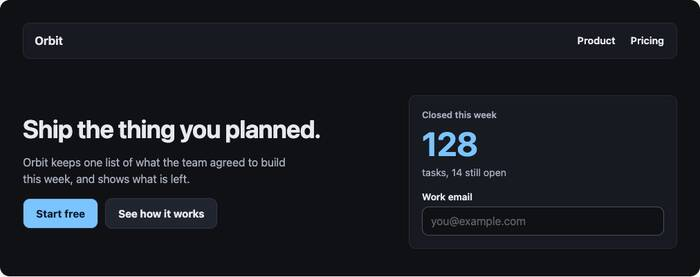
Developer tools, media and video, games, dashboards used in dim rooms.
Long-form reading for a general audience, unless a light theme is one click away.
The same as the light theme. Glows and gradients read stronger on dark, so use less.
A practice, not a movement. Research from Nielsen Norman Group says light mode reads better for most people, so a dark default needs a reason.
Objects drawn as if seen from above at an angle with no perspective, so parallel lines never meet. Reads as a tidy little model world.
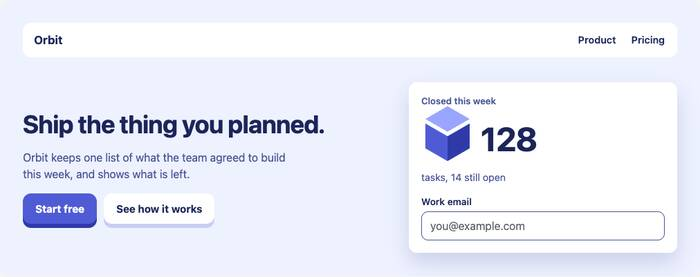
Explaining systems, infrastructure, logistics, fintech flows, feature diagrams.
Emotional or lifestyle brands.
Parts lift, stack and slide along the three axes. Layers separating vertically explain how a product is built.
A technical drawing projection; familiar from games, which usually use a 2:1 pixel ratio.
Four ways of using motion that are not looks. Each has a complete example site.
The words are the animation: letters, words and lines move, stretch and take turns, so reading and watching become one thing.
A set headline on load (0.6 to 1.2 s), then words that react to scroll. Stagger 30 to 60 ms per word.
examples/relay/
The page is a sequence: sections pin, pictures scrub and charts redraw as the reader scrolls, so the scroll bar becomes the timeline.
Scrubbed, not timed: the reader sets the speed. Smooth scroll is optional and must not fight the trackpad.
examples/tidewater/
A real-time 3D scene is the page: a product you can turn, a world the camera moves through, particles that form a shape.
Slow, weighty camera moves with damping. Idle motion of a few degrees keeps the scene alive.
examples/halden-one/
Small animated answers to what a person just did: a toggle that slides, a row that makes room, a number that settles.
Only in response to input. If nothing was pressed, nothing moves.
examples/mise/
Some people get dizzy or nauseous from movement on a screen, and they tell their system so. Others use a keyboard, a screen reader, or a browser where a script failed. The page has to work for all of them.
| Library | How it honours the setting |
|---|---|
| GSAP | motion is created only inside gsap.matchMedia() for visitors with no preference |
| Lenis | on by default: no smoothing, instant programmatic scrolls |
| Motion for React | <MotionConfig reducedMotion="user"> turns transform and layout animation off |
| three.js | draw one frame and hold it; draw again only when something changes |
| Lottie, Rive | load paused on a chosen still frame |
| View Transitions | the opt-in rule sits inside a media query for visitors with no preference |
A page that looks right on a fast laptop is not finished until it holds its budgets on the emulated phone.
| What | Budget |
|---|---|
| Frame time, desktop 1440 by 900 | 95 in every 100 frames take 20 ms or less |
| Frame time, emulated phone, processor slowed four times | 95 in every 100 frames take 40 ms or less |
| Files from the project, per page | 1.5 MiB or less |
| Third-party hosts | one: cdn.jsdelivr.net |
| Console errors | none |
transform and opacity. They are composited without layout or paint.| Example | Desktop, p95 frame | Emulated phone, p95 frame |
|---|---|---|
halden-one | 16.7 ms | 16.8 ms |
tidewater | 16.8 ms | 16.7 ms |
relay | 16.7 ms | 16.7 ms |
keeling | 16.7 ms | 16.7 ms |
mise | 16.7 ms | 16.7 ms |
sprout | 16.8 ms | 16.8 ms |
copper-no-7 | 16.8 ms | 16.8 ms |
style-atlas | 16.7 ms | 16.7 ms |
These are from the reports in the repository, measured on an Apple M-series laptop with Chrome 157. A screen that refreshes 60 times a second gives a frame every 16.7 ms, so these pages are at the screen's own limit. The phone run is this machine's graphics chip with the processor slowed down. It is not a real phone: it catches layout and most performance problems, and you should still look at the page on yours.
check_site.mjs opens every page in Chrome seven ways. A page with one WebGL canvas gets 27 checks.
| Run | What it checks | A failure means |
|---|---|---|
| Desktop | the page reports its motion state; frame time while idle and scrolling; no sideways scroll at six scroll positions; one main heading, a language, a title and description, zoom allowed, alt text, a main landmark and a skip link; a visible focus ring on the first twelve keyboard stops; page weight | the page is slow, wider than the screen, or missing basics |
| Phone, 390 px | frame time with the processor slowed four times; sideways scroll; tap targets of 24 px or more; page weight | it will stutter or be hard to tap |
| Phone, 320 px | sideways scroll, loaded fresh at that width | the layout breaks on the narrowest phones |
| Reduced motion | the page says so; no animation longer than a quarter of a second is running; two screenshots 0.7 seconds apart are identical at three scroll positions; every heading and paragraph is fully visible at some point; text contrast; normal scrolling works | something still moves, or some text never appears |
| JavaScript off | something readable is on the page | the content only exists after a script runs |
| WebGL off | the headline is readable; a still stands in for each WebGL canvas | visitors without WebGL get a hole |
| Every run | no console errors; requests only to the page itself and one CDN | something is broken or leaking |
It cannot see that a layout is dull, that a headline says nothing, or that text sits on a busy picture: text over pictures, gradients and canvas has no single background colour, so its contrast is not measured. After the checks pass, the agent opens the screenshots and looks at them against every "done when" line. So should you.
Unit tests cover the router, the kit's maths and the measuring code. A smoke test per stack opens the real example and proves the documented pattern does what it says: the poster really morphs between pages, keyboard reorder really moves the row, the canvas really changes with scroll. Then the full check runs on every example.
Eight sites, each built from the brief beside it. Run any of them: python3 skills/brief2motion/scripts/serve.py examples/tidewater.
28 of 28 checks passed. Chrome 158.
matchMedia block decides what runs on which screen and for which visitor.28 of 28 checks passed. Chrome 158.
28 of 28 checks passed. Chrome 158.
120 of 120 checks passed. Chrome 158.
28 of 28 checks passed. Chrome 158.
28 of 28 checks passed. Chrome 158.
28 of 28 checks passed. Chrome 158.
28 of 28 checks passed. Chrome 158.
| You want | Do this |
|---|---|
| A headline that sets word by word | split it with the kit; stagger 30 to 60 ms per word; finished within 1.2 seconds |
| A section that pins while something plays | a tall section with a sticky child and scrollScene; or ScrollTrigger with pin and scrub |
| A picture that follows the scroll | 40 to 60 WebP frames about 960 px wide; createSequence; keep the last frame as a plain image |
| A sideways gallery | pinned on wide screens with motion on; a swipe row with scroll snap otherwise |
| A line that draws itself | measured length with getTotalLength(), dash = length, animate the offset from length to 0 |
| A number that counts up | countUp; the real value stays in the page for screen readers |
| A chart that changes as you read | step-triggered states; the paragraph nearest the middle of the screen is active |
| A 3D product to turn | the kit stage, a generated environment, drag plus a slider, a still picture as fallback |
| A thumbnail that grows into the next page | @view-transition, one shared name, a render-blocking script |
| A grid that rearranges | change the page inside a view transition; name each card |
| A list to drag and reorder | Motion's Reorder with ids as values; it handles the keyboard too |
| A spring | Motion animate with type: spring; start the next one from the current value |
| Soft colour behind a hero | two to four blurred radial gradients; move them with transform only, over 15 to 30 seconds |
| Grain | one small noise tile from an SVG filter, repeated; never a live full-screen filter |
| Glass panels | a tinted see-through fill, a 10 to 25 px backdrop blur, a light edge, and a solid fallback for reduced transparency |
| Dust that forms a picture | the dust engine template: edit config.js only |
| An icon animation from a designer | mountLottie; reserve the box; choose the still frame |
node skills/brief2motion/scripts/route.mjs BRIEF.md # which stack and style, and why
python3 skills/brief2motion/scripts/serve.py site # preview at http://localhost
node skills/brief2motion/scripts/check_site.mjs site --out check # measure it
node skills/brief2motion/scripts/check_site.mjs site --no-perf # on a machine with no GPU
node skills/brief2motion/scripts/capture_site.mjs site --out media --film # pictures and a short film
node skills/brief2motion/scripts/build_styles.mjs # regenerate the style pages and atlas
bash examples/larkspur/tools/run-checks.sh # every site-mode check on the worked example| Symptom | Cause and fix |
|---|---|
| The page is blank | You opened the file, not the address. Run serve.py and open the link it prints. |
| "Could not start a browser" | Install Chrome, or run npx playwright@1.65.1 install chromium, or set BRIEF2MOTION_CHROME. |
| "The page never set data-motion" | The page did not report its state. Call signal() from the kit when setup is done. |
| The frame-time check fails | Usually layout properties being animated, an uncapped pixel ratio on a 3D canvas, or a loop running off screen. On a machine with no GPU, pass --no-perf. |
| The reduced-motion check fails | Something still moves, or some text never becomes visible. Check each library's own switch. |
| Sideways scroll at 320 px | The report names the element. Usually a row that does not wrap, or a grid track without minmax(0, 1fr). |
| The weight check fails | Pictures about 1200 px wide as WebP with a 720 px copy; a sequence about 960 px wide at quality 60 to 70. |
| A dust portrait does not look like the person | A calm, front-facing photo from the shoulders up on a plain background, with halftone and an oval mask. |
Does it cost anything? The skill is free and MIT licensed. The agent runs on your own Claude Code or Codex plan, and the checks run on your machine.
Does it upload my files? No. A built page loads its libraries from one CDN when a visitor opens it, and the first check downloads a browser driver once.
Which frameworks? A plain static site is the default and the best tested. For React and Next.js the references cover Motion for React and React Three Fiber; those are built by your own bundler.
Can I use the scripts without an agent? Yes: the router, the checker and the capture tool are ordinary command-line programs.
Can it make a video? The capture tool makes a short loop of a scroll-through. For a finished, checked MP4, its sibling skill brief2mp4 is the tool.
| Word | Meaning |
|---|---|
| Stack | the set of libraries a page uses for its motion |
| Pin | holding a section still on screen while the page keeps scrolling |
| Scrub | tying an animation's position to the scroll position, so scrolling back plays it backwards |
| p95 frame time | the time that 95 in every 100 frames stay under |
| Reduced motion | a system setting that asks sites for less movement |
| Fallback | what a visitor sees when something the motion needs is missing |
| Token | a named design value such as a colour, a radius or a shadow |
| Spring | motion defined by stiffness and damping instead of a duration, so it can be interrupted |
What this guide rests on, and where its limits are.
check_site.mjs; the reports are in the repository. The numbers on the performance page are read from those reports when this guide is built.https://www.nngroup.com/articles/neobrutalism/
https://github.com/ekmas/neobrutalism-components
https://brutalistwebsites.com/
https://www.nngroup.com/articles/glassmorphism/
https://developer.mozilla.org/en-US/docs/Web/CSS/backdrop-filter
https://www.apple.com/newsroom/2025/06/apple-introduces-a-delightful-and-elegant-new-software-design/
https://developer.apple.com/design/human-interface-guidelines/materials
https://en.wikipedia.org/wiki/Neumorphism
https://www.w3.org/WAI/WCAG22/Understanding/non-text-contrast.html
https://hype4.academy/articles/design/claymorphism-in-user-interfaces
https://hype4.academy/articles/coding/how-to-create-claymorphism-using-css
https://en.wikipedia.org/wiki/Skeuomorph
https://en.wikipedia.org/wiki/Flat_design
https://en.wikipedia.org/wiki/Material_Design
https://github.com/material-components/material-web
https://design.google/library/expressive-material-design-google-research
https://en.wikipedia.org/wiki/Swiss_Style_(design)
https://practicaltypography.com/line-length.html
https://en.wikipedia.org/wiki/Minimalism
https://www.nngroup.com/articles/homepage-design-principles/
https://en.wikipedia.org/wiki/Maximalism
https://webdesignerdepot.com/what-is-the-bento-ui-trend-and-how-can-you-get-started
https://www.freecodecamp.org/news/bento-grids-in-web-design/
https://en.wikipedia.org/wiki/Y2K_aesthetic
https://en.wikipedia.org/wiki/Frutiger_Aero
https://en.wikipedia.org/wiki/Vaporwave
https://en.wikipedia.org/wiki/Synthwave
https://en.wikipedia.org/wiki/Memphis_Group
https://en.wikipedia.org/wiki/Corporate_Memphis
https://en.wikipedia.org/wiki/Art_Deco
https://en.wikipedia.org/wiki/Cyberpunk
https://www.nngroup.com/articles/dark-mode/
https://en.wikipedia.org/wiki/Glitch_art
https://developer.mozilla.org/en-US/docs/Web/CSS/@property
https://developer.mozilla.org/en-US/docs/Web/CSS/color_value/color-mix
https://developer.mozilla.org/en-US/docs/Web/SVG/Reference/Element/feTurbulence
https://en.wikipedia.org/wiki/Duotone
https://developer.mozilla.org/en-US/docs/Web/CSS/mix-blend-mode
https://en.wikipedia.org/wiki/Isometric_video_game_graphics
https://en.wikipedia.org/wiki/Kinetic_typography
https://en.wikipedia.org/wiki/Parallax_scrolling
https://www.w3.org/WAI/WCAG22/Understanding/animation-from-interactions.html
https://github.com/mrdoob/three.js
https://web.dev/articles/vitals
https://www.nngroup.com/articles/microinteractions/
https://www.nngroup.com/articles/animation-duration/
https://www.nngroup.com/articles/homepage-design-principles/
https://www.nngroup.com/articles/scrolling-and-attention/
https://www.nngroup.com/articles/animation-duration/
https://www.w3.org/WAI/WCAG22/Understanding/contrast-minimum.html
https://www.w3.org/WAI/WCAG22/Understanding/target-size-minimum.html
https://web.dev/articles/vitals
https://tailwindcss.com/docs/responsive-design
https://gsap.com/community/standard-license/
https://github.com/anthropics/skills
The repositories studied, with licences and what was taken from each, are in RESOURCES.md. No code from another project is copied into brief2motion. Facts were checked on 17 November 2026.